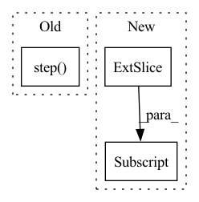

Pattern ID :4221
Before Change
fnet_loss = fnet_loss.cuda()
fnet_optimizer.zero_grad()
fnet_loss.backward()
fnet_optimizer.step()
update_list_avg += [tb, dt_ratio]
update_list_name += ["t_balance", "Dst_ratio"]
update_list_avg += [counter1, counter2]After Change
gen_flow_back = upscale_four(fnet_input_back[:, 0:2] * 4.0)
gen_flow_back = torch.reshape(gen_flow_back,
(FLAGS.batch_size, t_size // 3, 2, FLAGS.crop_size * 4, FLAGS.crop_size * 4))In pattern: SUPERPATTERN
Frequency: 3
Non-data size: 3
Instances Fragment ID: 15487912
Project Name: dwightfoster/pytorch-tecogan
Commit Name: b64afd58ac37b8b9ed21dc91b415612572cfa585
Time: 2021-03-11
Author: dwightfoster03@gmail.com
File Name: code/train.py
M Class Name: AnonimousClass
N Class Name: AnonimousClass
M Method Name: TecoGAN(11)
N Method Name: TecoGAN(13)
M Parent Class:
N Parent Class:
M File Name: code/train.py
N File Name: code/train.py
M Start Line: 47
M End Line: 347
N Start Line: 66
N End Line: 145
Before Change
self._step(action, selected_player)
def _step(self, action, player):
self.step( action, player)
self.record[-1] = [self.BLACK, self.WHITE][player], action
def diff_info(self, _):
if len(self.record) == 0:After Change
if self.board[x, :].sum() == 3 * selected_color \
or self.board[:, y].sum() == 3 * selected_color \
or (x == y and np.diag(self.board, k=0).sum() == 3 * selected_color) \
or (x == 2 - y and np.diag(self.board[::-1, :] , k=0).sum() == 3 * selected_color):
self.win_color = selected_color
self.record.append((selected_color, action)) Fragment ID: 15487913
Project Name: dena/handyrl
Commit Name: 1dce83a00bbd21ff0a67fcb64ce25e5e59256b97
Time: 2021-03-04
Author: a.a.b.a.b.c.a.b.c.d.abcd1234@gmail.com
File Name: handyrl/envs/parallel_tictactoe.py
M Class Name: Environment
N Class Name: Environment
M Method Name: _step(3)
N Method Name: _step(3)
M Parent Class: TicTacToe
N Parent Class: TicTacToe
M File Name: handyrl/envs/parallel_tictactoe.py
N File Name: handyrl/envs/parallel_tictactoe.py
M Start Line: 27
M End Line: 28
N Start Line: 27
N End Line: 38
Before Change
// perform gradient descent for lstm
self.lstm_optimizer.step()
// update target networks
self.polyak_update(target_net=self.Q1_targ, prediction_net=self.Q1)After Change
self.critic_lstm.flatten_parameters()
critic_h, _ = self.actor_lstm(b.o)
critic_h_1_T, critic_h_2_Tplus1 = critic_h[:, :-1, :] , critic_h[:, 1:, :] // T represents num_bptt
// prepare lstm to receive gradient from all losses (Q1_loss, Q2_loss, policy_loss)
// retain_graph needs to be used because lstm is shared among the three Fragment ID: 15487911
Project Name: zhihanyang2022/off-policy-continuous-control
Commit Name: 0d405a315e44a0b8df2bfcb89ea02b6979215166
Time: 2021-05-23
Author: yangz2@carleton.edu
File Name: offpcc/algorithms/sac_lstm.py
M Class Name: SAC_LSTM
N Class Name: SAC_LSTM
M Method Name: update_networks(2)
N Method Name: update_networks(2)
M Parent Class: OffPolicyRLAlgorithm
N Parent Class: OffPolicyRLAlgorithm
M File Name: offpcc/algorithms/sac_lstm.py
N File Name: offpcc/algorithms/sac_lstm.py
M Start Line: 128
M End Line: 221
N Start Line: 130
N End Line: 229